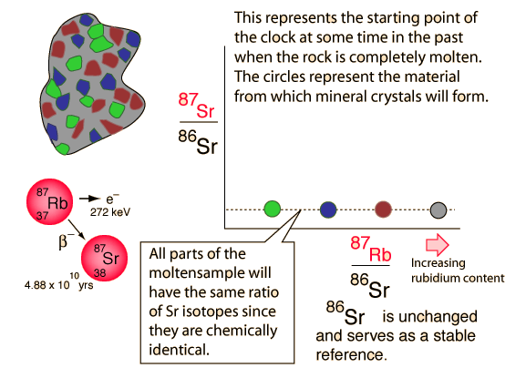

Rubidium-Strontium Isochrons
Click on the illustration to step through the discussion.

Rubidium-strontium isochrons can be used to calculate the last time of complete melting of a rock. The complete melting of the rock is a necessary condition, because that is what accomplishes the equilibrium of the isotopes of strontium. The isotopes of an element are chemically identical, and any chemical process will treat them identically. That's why we know the ratio of the strontium isotopes in the melt is a horizontal straight line in the illustration above. The isotope 86Sr is non-radiogenic in origin and does not change, but 87Sr is produced by the radioactive decay of 87Rb. There is no way of anticipating what the 87Sr is at the time of melt, but if there is 87Rb present then it will increase with time as the rubidium isotope decays. That is what makes this a useful clock.
|
Index |